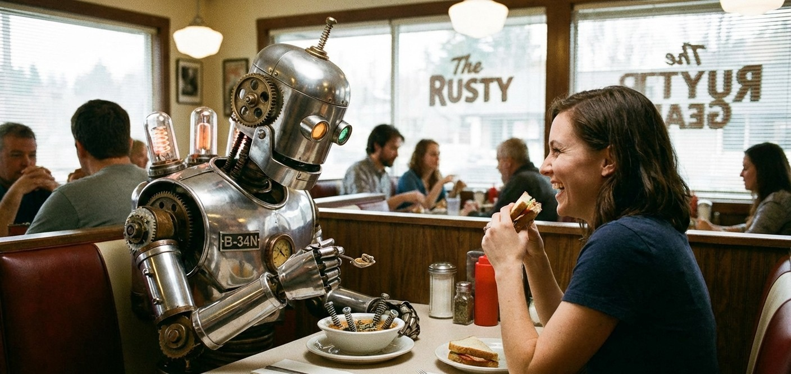
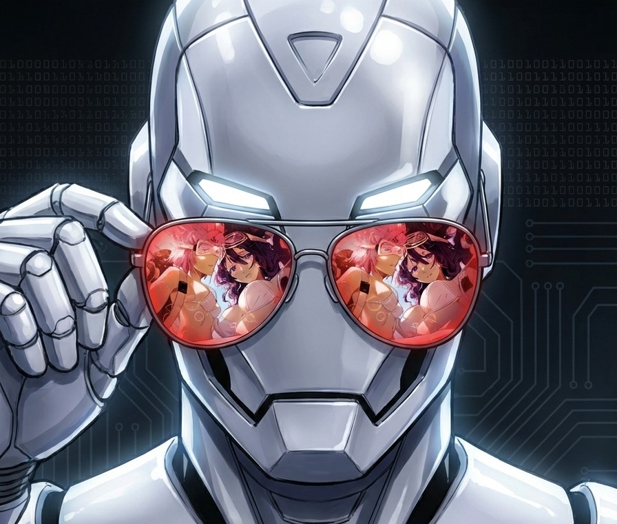
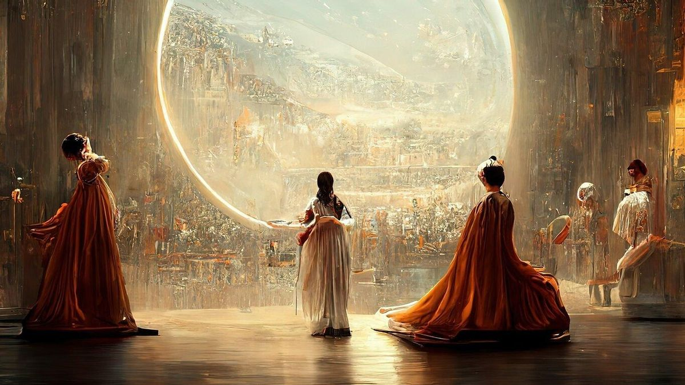

Impacto de la IA: Creatividad y Estrategia
Explora cómo la IA está revolucionando la creación artística y la forma en que las marcas se comunican con nosotros.
Arte

Arte Generativo: Algoritmos que crean piezas únicas basadas en datos y redes neuronales.
Marketing
Publicidad Predictiva: La IA analiza gustos para mostrarnos productos que realmente nos interesan.
Arte
Branding Automático: Herramientas que generan identidades visuales en segundos.
Marketing

Segmentación: Entender qué siente el público mediante el análisis de sentimientos en redes.
Arte

Transferencia de Estilo: Fotos cotidianas convertidas en